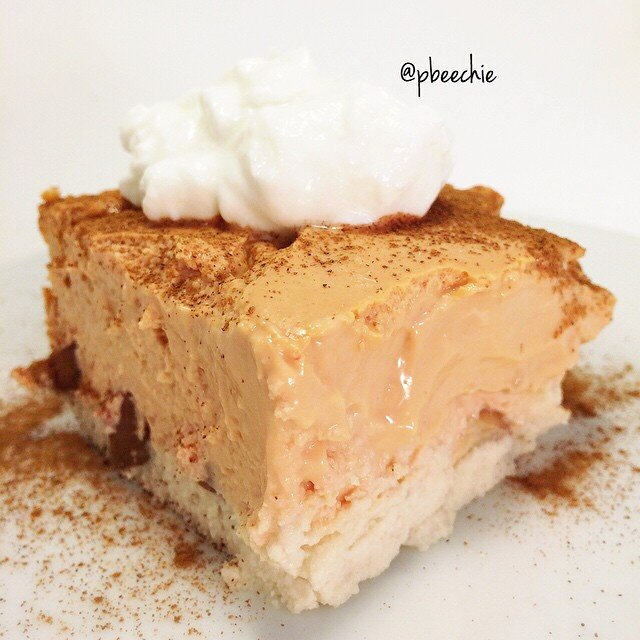

Cinnamon Apple Cheesecake Bars

Just'a gonna leave this here. Healthy apple cheesecake bars + more cinnamon #always and plain greek yogurt.
Cinnamon Apple Cheesecake Bars
Makes: 9 bars
Crust
-
1/2 cup almond meal
-
1/4 cup coconut flour
-
3/4 cup unsweetened almond milk
-
1 egg white
-
1 stevia packet
-
1 apple
Cheesecake Layer
-
1.5 cups plain greek yogurt (12 oz)
-
2, 8 oz containers of fat free cream cheese
-
2 eggs
-
2 egg whites
-
1.5 cups baking stevia
-
2 scoops of cinnamon swirl protein powder
-
Preheat the oven to 250 F.
-
Make your crust first. In a bowl, mix your almond meal, coconut flour, almond milk, egg white, and stevia until no lumps remain. Spray 9x9 dish and spread your batter thin to make a crust.
-
Slice one apple thin and create a layer of apple slices on top of the crust.
-
Mix all of your ingredients for the cheesecake layer. I use a food processor, and it's best if the cream cheese is room temperature. Pour on top of the apple layer.
-
Bake at 250 F for 70 mins. Remove and let cool to room temp.
-
Then place it in the fridge overnight. Slice into 9 pieces and nom.